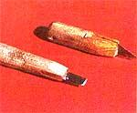
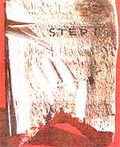
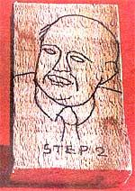
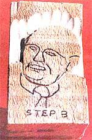
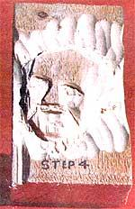
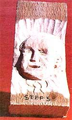

Most people, upon hearing the words "family portrait", immediately envision a framed photograph or painting. Well, the same terms make me think of handsome, three-dimensional wood carvings that draw the admiring gazes of my friends and customers! Whittling portraits may not be as difficult as you think (although it couldn't be called easy, on the other hand), and the skill can help you earn extra money while giving you a lot of pleasure.
The secret to success in the field of carved portraiture is having a good photograph to work from. Unless you're a fine artist yourself, you're likely going to have trouble trying to sketch your family on a rough slab of lumber and have the proportions come out close to right. So get a good snapshot and have it blown up to the size you want. Then trace the main outlinesincluding a border-on thin paper, and set the tracing aside while you locate an appropriate hunk of wood.
The first place to look for portrait lumber is, of course, in your own scrap pile. Search for a piece of board that's large enough for the proposed picture. Then check to see whether it's a good slab to work on: Whittle on a small portion, noting whether the wood can be cut smoothly at an angle to the grain and whether it feels good to carve.
Once you've selected your material, place a piece of carbon paper between the wood and the tracing, and go over the drawing to transfer it to the slab. Then, with the work laid out, you can begin cutting. (See the accompanying sidebar for information on making your own carving tools.) It's very important to slice straight down on the carbon lines at first. If you angle the cuts, you'll change the proportions, and you might add 50 pounds to each person . . . or subtract it! Your drawn lines will represent the widest parts of heads, arms, and shoulders, so once you've cut straight down, you should use a gouge to scoop out all of the background surrounding your figures. If your tool is sharpas it should be-and the wood is soft, this job will be a bit like digging out bites of melon with a spoon. You'll need to recut the outline and remove another layer of background some three or four times at least, in order to be sure your figures are sufficiently high to support detail work.
At this point the faces of your subjects should appear as raised, flat-topped ovals. Now, you need to give them contoured chins, cheeks, noses, and such. If you were carving a statue, you'd need to leave the nose sticking way out . . . but a face on a plaque isn't seenindeed, it can't be seen-from the side, because the border obscures that view. Therefore, you'll probably be cutting no more than a quarterinch deep when making the features.
Let the forehead and the nose tip remain at the level of the original surface of your wood slab . . . the highest points of the cheeks and lips should be shaped to about 1/16 inch below that . . . and the eyes will be deeper still. Cut down to these levels before you try for any smaller detail. Be sure to refer to the photo while you work (otherwise you might well make everyone look alike), and when in doubt, stop and sharpen your tools. Remove the wood in little tire . slices, and when you finish whittling your wife's/husband's/sibling's face stop and ask yourself, "Does (whoever really look that old?" If the answer is n, you need to remove some of the toe marks.
Of course, you probably don't want I use sandpaper on your delicate details carvings . . . instead, sharpen your knit. and lightly scrape the angular marks o each cheek, the forehead, the chin, ac the lips. The whittled face will get smoother and younger looking in a hurry, so stop when it's right.
I finished my first plaque A ith a coa . clear lacquer. That was a mistake: The carving has looked like plastic ev, since. I left my next effort as was . . . b. that was a mistake, too. It seems that people like to touch carvings, and so(:: all the portrait's high spots were grimy.
Since then, I've learned that shoe p(.: ish makes a first-rate finish. A neutral of soft brown shade of wax-rubbed in, the n buffed with a shoe brush-darkens the surface and makes the carving look rich er and deeper. The pores of the wood fi ll with wax, too (preventing dirt buildup and all the details of the portrait seem ?< stand out very distinctly.
Fortunately, corrections and change can be made up to the last moment. I some detail wrong, some facial express sion incorrect? Well, just carve deeper, rewax, and then reevaluate your work.
There's something very precious about a family portrait, and something spec ial about a wood carving made by hand. T! gether, they can be an unbeatable combination . . . for you, for your friends at and relatives, andshould you decide to tut n your craft into a source of part-tine income-for your eager customers!
If you'd like to fashion homemade whittling equipment, you'll need some hardwood for handles, steel for blades, and epoxy glue to hold the components together. I used a broken hammer handle, a worn-out shatterproof hacksaw blade, and a band-saw blade to make the tools pictured here.
To begin, snap off two- or three-inch lengths of hacksaw blade and sandpaper the paint off so the glue will hold. Then cut pieces of hardwood into comfortable handle lengths, and whittle and rasp them until they fit your hand. Now, saw a slot in each handle about an inch deep, and slather the cut with epoxy. Stuff a piece of hacksaw blade into each slot, and let the glue set up overnight in a warm place (such as behind the water heater or under an ordinary table lamp).
By the following morning, the joints ought to be rock-hard. Unfortunately, the blades themselves are even harder! The toothed side of a shatterproof hacksaw blade is made of hard, brittle steel that's too inflexible for woodworking tools. You can't do anything much to it with a hand file, but a bench grinder can be used to remove the teeth and then shape a good cutting edge on the opposite side of the sawblade, which is made of a springier metal.
You'll probably want a narrow chisel, a broad chisel, and a few short-bladed whittling knives. You're also going to need a gouge, but a hacksaw blade can't be appropriately curved. A band saw blade, on,the other hand, can be hammered into the "scoop" you need, although it takes a very careful and delicate touch to do so unless you first heat the blade and then cool it down in a can of hot ashes. I laid mine on one of the concave curves of a length of railroad iron and tapped it awhile with the round end of a ball-peen hammer. When it took on the shape of a little roundbottomed trough, I stopped.
Once your gouge is shaped to your liking, heat it red hot and drop it into old crankcase oil. It may become too hard for your purposes-so hard that the steel edge can shatter-in which case you should heat it again, very gently. File off the black coating of oxides every few seconds as you do so, and watch the shiny metal change hue. When it turns a sort of straw color, drop it into water. That will "draw the temper" about right for a woodworking tool. After the blade is finished, saw two angled slots in your hardwood handle, to accommodate the curve, and epoxy it in place as you did the knives.
When sharpening your tools, be sure to keep a little water dripping on your Carborundum, and act as though you were trying to scrape an invisible decal off the stone. There may not be any such thing as "sharp enough", but you should be able to shave a hair off the back of your arm (be careful!), or easily slice thin ribbons of wood off a plank.
|
 STAFF PHOTOS
|
 Step 1. The wood is checked for ""carvability"" |
 Step 2. The tracing has been transferred to the wood block with carbon paper .... |
||
|
 Step 3. The background is being gouged away to show the outlines .... |
 Step 4. The face has been roughed in. |
 Step 5 . Here's the semifinished portrait .... |
||
|
Step 5 The carving has been coated with brown wax shoe polish, which is rubbed in and buffed to a soft glow, then delicately scraped off to achieve highlighting. The finished work can be hung from a wall or propped up. |
|
|